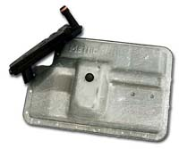
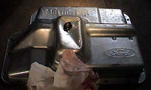
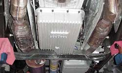
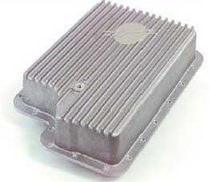
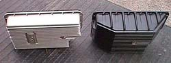
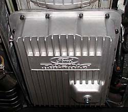
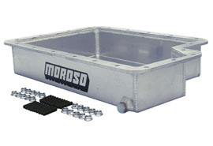
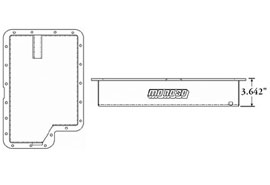

|
Transmission Pans |
|
Ford 4X4: Stamped metal. Holds about 1 quart over stock. $55 with filter from Lightning Force Performance. Pan: F81Z-7A194-BA ($27.31 at www.fordpartsonline.com) Filter: YC3Z-7A098-BA ($16.73 at www.fordpartsonline.com) The protruding drain plug area can be problematic on lowered trucks: 
I originally has a B&M pan. But because it doesn't play nice nice with the X-Factor, I just swapped it for a 4X4 pan. I was thinking that it was a downgrade, but then got to studying it a little harder. It and the Ford Racing cast pan are the only ones with a depression for the pickup tube. This depression (and the accompanying filter with a deep pickup tube) is presumably designed to allow better fluid pickup when the truck is at severe angles offroad. Those same attributes are great for road racing and to a lesser extent drag racing. The revelation was that this depression will allow fluid transfer when there is less than a quart in the pan. The other designs without a depression would require several quarts. |
|
B&M: Cast aluminum. Holds about 3 quarts over stock. $180 with filter from Lightning Force Performance. |
|
Mac Products: Cast aluminum. Looks like a B&M copy. Holds about 3 quarts over stock. $160 (with filter?). |
|
Mag-Hytec: Cast aluminum. Holds about 8 quarts (!) over stock. $325 without filter. Mag-Hytec claims up to 30 degree fluid temp drop. Due to ground clearance issues, Mag-Hytec does not recommend this pan, which is targeted at 4X4's and tow vehicles, for lowered trucks. Shown below next to the B&M. |
|
Performance Automotive Racing/Ford Racing/Hughes Performance: Cast aluminum. Holds about 4 quarts over stock. $200-240. The exposed drain plug looks like a serious shortcoming. |
|
Moroso (part #
42050): Sheet aluminum, billet rail. Holds 4 1/2 quarts over stock.
But the Moroso pan is about 3/4" less deep than the B&M pan, so I don't
know where the extra fluid is. Less depth equals less ground
clearance issues. Side plug helps mitigate harm from impact.
 |